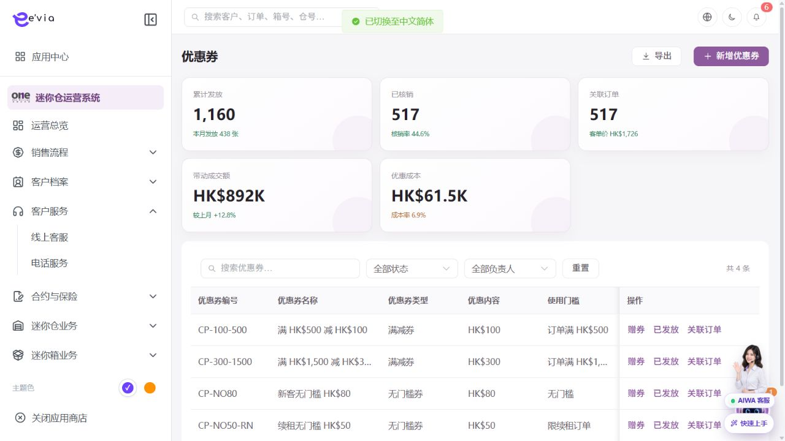
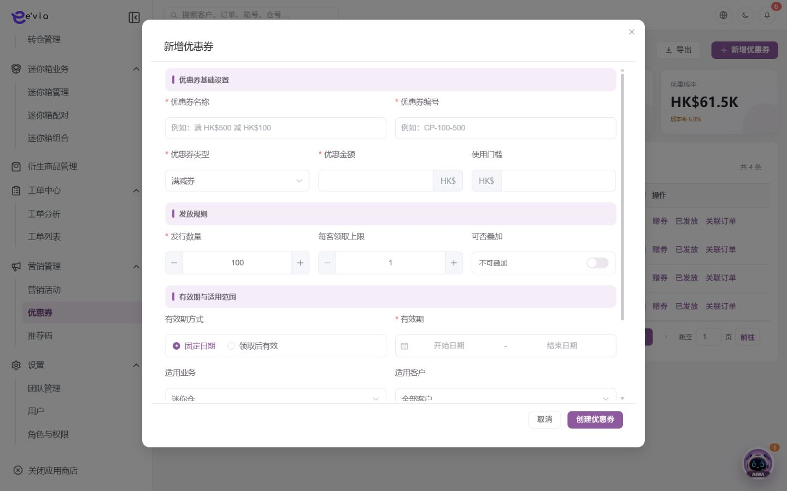
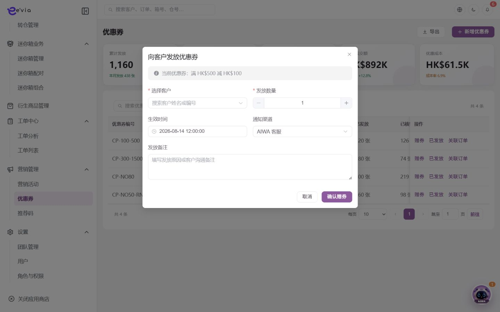

优惠券管理 PRD
下载 Word 文档优惠券管理 PRD
运营后台研发详细需求规格 · V2.5 · 2026-09-09
1 文档目标与范围
管理优惠券模板、发放、领取、锁定、核销、失效和退回。 本文档明确页面字段、操作流程、业务规则、跨端契约、权限和验收条件。
| 属性 | 内容 |
|---|---|
| 文档编号 | OS-OPS-PRD-25 |
| 产品基线 | AiwaBot产品原型 V3.2 与 OneStorage运营后台原型 V1.1 |
| 版本 | V2.5 2026-09-09 |
1.1 原型界面依据
本模块界面直接取自 AiwaBot产品原型-v3.2.html。真实截图及功能点对应说明见“界面与功能对应说明”。
2 界面与页面结构
2.1 界面与功能对应说明
以下真实原型截图用于确定页面区域、入口和交互位置；字段校验、状态变化和服务端处理以本PRD功能规格为准。

| 说明项 | 界面辅助说明 |
|---|---|
| 对应功能点 | OS-OPS-PRD-25-FP03 锁定与核销；OS-OPS-PRD-25-FP04 作废 |
| 页面区域 | 配置页包含条件筛选、配置列表、启停或发布状态以及新增、编辑、查看等管理入口。 |
| 交互要求 | 编辑使用版本控制；启停、发布和权限变更需要确认并记录审计，已被业务引用的数据不得物理删除。 |
| 状态与权限 | 动作由当前允许操作控制；无权限隐藏入口，接口仍执行403校验并记录审计。 |

| 说明项 | 界面辅助说明 |
|---|---|
| 对应功能点 | OS-OPS-PRD-25-FP01 新增优惠券 |
| 页面区域 | 新增界面按业务分组展示表单字段、关联对象选择、保存与取消操作。 |
| 交互要求 | 必填和格式错误在字段下方提示；关联对象实时校验；保存期间按钮防重复，关闭已修改表单需二次确认。 |
| 状态与权限 | 动作由当前允许操作控制；无权限隐藏入口，接口仍执行403校验并记录审计。 |

| 说明项 | 界面辅助说明 |
|---|---|
| 对应功能点 | OS-OPS-PRD-25-FP02 发放；OS-OPS-PRD-25-FP05 导出发放明细 |
| 页面区域 | 发放界面展示优惠券摘要、客户选择、发放数量、有效期和发放说明。 |
| 交互要求 | 提交前校验客户、库存、活动范围、单客上限和幂等键；成功后展示发放批次及逐客户结果。 |
| 状态与权限 | 动作由当前允许操作控制；无权限隐藏入口，接口仍执行403校验并记录审计。 |
2.3 筛选条件
| 筛选项 | 规则 |
|---|---|
| 优惠券编号或名称 | 支持组合查询、重置和返回保留。 |
| 券类型 | 支持组合查询、重置和返回保留。 |
| 状态 | 支持组合查询、重置和返回保留。 |
| 有效期 | 支持组合查询、重置和返回保留。 |
| 适用业务 | 支持组合查询、重置和返回保留。 |
3 列表字段规格
>| 字段ID | 字段 | 来源 | 展示与交互规则 |
|---|---|---|---|
| OS-OPS-PRD-25-L01 | 优惠券编号 | 服务端主键或业务编号 | 完整展示并支持复制；唯一且不可使用展示名称代替。 |
| OS-OPS-PRD-25-L02 | 优惠券名称 | 财务或报价主域 | 显示币种和两位小数；不得用格式化字符串参与计算。 |
| OS-OPS-PRD-25-L03 | 优惠券类型 | 财务或报价主域 | 显示币种和两位小数；不得用格式化字符串参与计算。 |
| OS-OPS-PRD-25-L04 | 优惠内容 | 财务或报价主域 | 显示币种和两位小数；不得用格式化字符串参与计算。 |
| OS-OPS-PRD-25-L05 | 使用门槛 | 业务主域 | 详情与导出保持一致；空值显示—，不使用模拟值补齐。 |
| OS-OPS-PRD-25-L06 | 已发放 | 业务主域 | 详情与导出保持一致；空值显示—，不使用模拟值补齐。 |
| OS-OPS-PRD-25-L07 | 已核销 | 业务主域 | 详情与导出保持一致；空值显示—，不使用模拟值补齐。 |
| OS-OPS-PRD-25-L08 | 有效期 | 业务主域 | 详情与导出保持一致；空值显示—，不使用模拟值补齐。 |
| OS-OPS-PRD-25-L09 | 操作人 | 服务端/关联主数据 | 记录最近一次有效业务操作人员。 |
| OS-OPS-PRD-25-L10 | 更新时间 | 服务端/关联主数据 | 服务器更新时间，格式YYYY-MM-DD HH:mm:ss。 |
| OS-OPS-PRD-25-L11 | 状态 | 服务端/关联主数据 | 以标签显示服务端枚举；不可由前端自行推导。 |
| OS-OPS-PRD-25-L12 | 关联订单 | 服务端/关联主数据 | 显示订单编号并支持在有权限时跳转。 |
| OS-OPS-PRD-25-L13 | 操作 | 服务端/关联主数据 | 根据当前允许操作显示查看、编辑及状态动作；后端再次鉴权。 |
4 新增与编辑表单
| 字段ID | 字段 | 控件 | 必填 | 校验与保存规则 |
|---|---|---|---|---|
| OS-OPS-PRD-25-F01 | 优惠券名称 | 文本框 | 条件必填 | 去除首尾空格；保存原始值与标准化值。 |
| OS-OPS-PRD-25-F02 | 优惠券编号 | 只读或检索选择 | 系统生成/必填 | 新增时由服务端生成；关联编号必须存在且在数据范围内。 |
| OS-OPS-PRD-25-F03 | 券类型 | 单选或下拉选择 | 必填 | 选项来自服务端字典；提交编码值，界面显示名称。 |
| OS-OPS-PRD-25-F04 | 优惠金额或折扣 | 金额输入 | 条件必填 | 输入大于等于0，最多两位小数；服务端以最小货币单位重算。 |
| OS-OPS-PRD-25-F05 | 使用门槛 | 文本框 | 条件必填 | 去除首尾空格；保存原始值与标准化值。 |
| OS-OPS-PRD-25-F06 | 最高优惠 | 文本框 | 条件必填 | 去除首尾空格；保存原始值与标准化值。 |
| OS-OPS-PRD-25-F07 | 适用业务 | 文本框 | 条件必填 | 去除首尾空格；保存原始值与标准化值。 |
| OS-OPS-PRD-25-F08 | 适用店铺 | 单选或下拉选择 | 必填 | 选项来自服务端字典；提交编码值，界面显示名称。 |
| OS-OPS-PRD-25-F09 | 发放总量 | 文本框 | 条件必填 | 去除首尾空格；保存原始值与标准化值。 |
| OS-OPS-PRD-25-F10 | 每人限领 | 文本框 | 条件必填 | 去除首尾空格；保存原始值与标准化值。 |
| OS-OPS-PRD-25-F11 | 领取开始 | 日期或日期时间 | 必填 | 服务端校验起止顺序、营业日和截止规则。 |
| OS-OPS-PRD-25-F12 | 领取结束 | 日期或日期时间 | 必填 | 服务端校验起止顺序、营业日和截止规则。 |
| OS-OPS-PRD-25-F13 | 有效期方式 | 单选或下拉选择 | 必填 | 选项来自服务端字典；提交编码值，界面显示名称。 |
| OS-OPS-PRD-25-F14 | 可叠加规则 | 文本框 | 条件必填 | 去除首尾空格；保存原始值与标准化值。 |
| OS-OPS-PRD-25-F15 | 退回规则 | 文本框 | 条件必填 | 去除首尾空格；保存原始值与标准化值。 |
| OS-OPS-PRD-25-F16 | 说明 | 多行文本 | 条件必填 | 最多500字；拒绝或异常原因不得只输入空白。 |
4.1 详情入口与页面容器
从列表查看入口、业务编号链接或关联对象深链打开详情。界面依据原型真实截图“优惠券管理列表”；原型没有独立详情画面时不使用示例图，按现有列表视觉体系实现。
| 界面状态 | 完整处理规则 |
|---|---|
| 打开与返回 | 保存列表筛选、分页、排序和滚动位置，返回后仅刷新变化行 |
| 加载中 | 显示业务编号与骨架，禁止闪现上一条记录 |
| 加载成功 | 返回id、数据版本、状态、数据截止时间、字段权限和当前允许操作 |
| 不存在或无权限 | 不泄露敏感信息，提供返回入口并记录拒绝审计 |
| 版本变化 | 自动刷新只读区，存在未提交操作时提示比较 |
| 部分失败 | 保留成功信息组，失败组显示链路追踪编号和重试 |
4.2 顶部摘要与信息组
详情覆盖新增、编辑以及系统处理后形成的有效字段，不得只复制列表列。
| 信息组 | 展示字段 | 展示与交互规则 |
|---|---|---|
| 标识与基本资料 | 优惠券编号、优惠券名称、优惠券类型、优惠内容、使用门槛、已发放、已核销、有效期、券类型、最高优惠、适用业务、发放总量、每人限领、领取开始、领取结束、有效期方式、可叠加规则、退回规则 | 完整显示业务编号与主属性；编号支持复制且不可编辑，敏感字段按字段权限脱敏。 |
| 归属与关联对象 | 关联订单、适用店铺 | 显示名称加业务编号；有查看权限时可打开关联对象，无权限时只显示允许的摘要。 |
| 金额数量与业务配置 | 优惠金额或折扣 | 显示原始值、单位、币种和有效版本；金额与数量由服务端返回，前端不得二次推导覆盖。 |
| 状态责任与时间 | 操作人、更新时间、状态 | 显示当前状态、负责人、业务时间和服务器更新时间；状态由服务端枚举与时间线共同解释。 |
| 附件说明与补充信息 | 说明 | 附件展示文件名、版本、扫描状态和权限动作；长文本保留换行并记录创建人与时间。 |
| 系统与审计信息 | 数据版本、创建时间、创建人、更新时间、更新人、来源渠道、请求编号 | 作为详情响应固定字段；用于并发控制、来源说明和操作追踪，不允许前端伪造。 |
4.3 状态时间线与处理记录
| 区域 | 内容 | 规则 |
|---|---|---|
| 当前状态 | 模板：草稿→待发放→发放中→已结束；券实例：未领取→未使用→已锁定→已核销/已过期/已作废 | 由服务端返回，不由前端推断 |
| 状态时间线 | 创建、审批、执行、完成、取消、失败和恢复节点 | 显示事件编号、操作者、来源端、业务时间、接收时间、原因和结果 |
| 操作记录 | 字段变更、状态动作、下载导出和权限拒绝 | 倒序分页并对敏感值脱敏 |
| 异步任务 | 通知、同步、文件、第三方、导出或补偿 | 显示任务编号、状态、重试次数和最近错误 |
4.4 关联对象与页签
| 页签 | 范围 | 规则 |
|---|---|---|
| 基本资料 | 当前对象全部有效字段 | 按字段权限显示、脱敏或隐藏 |
| 关联业务 | 券模板、发放批次、客户券实例、领取、锁定、核销、订单、作废与退回记录 | 按权限分页并提供目标详情地址 |
| 附件凭证 | 当前对象及处理过程文件 | 显示版本、扫描、哈希与可用动作 |
| 处理记录 | 时间线、日志与异步任务 | 按类型筛选并使用香港时区 |
4.5 详情动作与状态控制
| 动作ID | 动作 | 角色 | 前置条件 | 成功及刷新规则 |
|---|---|---|---|---|
| OS-OPS-PRD-25-DA01 | 新增优惠券 | 具备本模块创建权限的运营人员 | 用户登录有效并具备创建或批量权限；关联主数据有效且属于数据权限范围；页面已加载最新字典、业务配置和当前允许操作。 | 创建模板并校验面额、门槛和有效期。 成功后刷新数据版本、状态、时间线、关联数量和当前允许操作；失败不得提前改变界面主状态。 |
| OS-OPS-PRD-25-DA02 | 发放 | 当前对象负责人、被分派执行人或获授权管理员 | 用户登录有效；目标对象存在且属于用户数据权限范围；当前状态包含该动作；页面持有最新数据版本和当前允许操作。涉及金额、库存、附件或第三方结果时必须回源确认。 | 按客群或名单生成券实例并返回失败明细。 成功后刷新数据版本、状态、时间线、关联数量和当前允许操作；失败不得提前改变界面主状态。 |
| OS-OPS-PRD-25-DA03 | 锁定与核销 | 具备审批、财务或复核权限的人员 | 用户登录有效；目标对象存在且属于用户数据权限范围；当前状态包含该动作；页面持有最新数据版本和当前允许操作。涉及金额、库存、附件或第三方结果时必须回源确认。 | 结算锁定，支付成功核销，超时释放。 成功后刷新数据版本、状态、时间线、关联数量和当前允许操作；失败不得提前改变界面主状态。 |
| OS-OPS-PRD-25-DA04 | 作废 | 当前对象负责人、被分派执行人或获授权管理员 | 用户登录有效；目标对象存在且属于用户数据权限范围；当前状态包含该动作；页面持有最新数据版本和当前允许操作。涉及金额、库存、附件或第三方结果时必须回源确认。 | 仅未使用实例可作废并记录原因。 成功后刷新数据版本、状态、时间线、关联数量和当前允许操作；失败不得提前改变界面主状态。 |
| OS-OPS-PRD-25-DA05 | 导出发放明细 | 具备导出或报告权限的用户 | 用户具备导出或报告权限，当前查询已完成且筛选合法；导出列不得超出字段权限，任务配额未超限。 | 按权限脱敏客户信息。 成功后刷新数据版本、状态、时间线、关联数量和当前允许操作；失败不得提前改变界面主状态。 |
仅显示当前允许操作返回的动作
高风险动作二次确认并展示影响
提交携带预期数据版本和客户端请求编号
超时先查结果再重试
部分成功返回逐项结果和补偿入口
4.6 接口事件与验收
| 契约 | 路径或事件 | 要求 |
|---|---|---|
| 详情聚合 | GET /ops/v1/coupons/{id} | 资料、状态、数据版本、权限、动作与关联计数 |
| 状态时间线 | GET /ops/v1/coupons/{id}/timeline | 不可覆盖的业务节点 |
| 关联对象 | GET /ops/v1/coupons/{id}/relations | 目标对象权限与分页 |
| 操作记录 | GET /ops/v1/coupons/{id}/activities | 变更、动作、任务与审计 |
| 业务动作 | POST /ops/v1/coupons/{id}/actions/{操作类型} | 幂等和并发控制 |
| 变更事件 | 优惠券管理.详情变化事件.v1 | 按发生变化的页面区域刷新 |
详情覆盖新增编辑与系统字段
状态时间线和动作使用同一数据版本
权限在返回字段前生效
关联数量与明细一致
附件和下载有审计
并发冲突不覆盖输入
异步失败可追踪补偿
返回列表保留上下文
5 功能点详细设计
| 功能编号 | 功能点 | 目标 |
|---|---|---|
| OS-OPS-PRD-25-FP01 | 新增优惠券 | 创建模板并校验面额、门槛和有效期。 |
| OS-OPS-PRD-25-FP02 | 发放 | 按客群或名单生成券实例并返回失败明细。 |
| OS-OPS-PRD-25-FP03 | 锁定与核销 | 结算锁定，支付成功核销，超时释放。 |
| OS-OPS-PRD-25-FP04 | 作废 | 仅未使用实例可作废并记录原因。 |
| OS-OPS-PRD-25-FP05 | 导出发放明细 | 按权限脱敏客户信息。 |
5.1 新增优惠券
功能编号：OS-OPS-PRD-25-FP01
功能目的：创建模板并校验面额、门槛和有效期。
使用角色与入口：具备本模块创建权限的运营人员；从模块列表右上角新增入口或关联对象快捷入口进入。入口显示前校验菜单、动作和数据范围。
前置条件：用户登录有效并具备创建或批量权限；关联主数据有效且属于数据权限范围；页面已加载最新字典、业务配置和当前允许操作。
界面操作：打开新增界面，按页面分组录入优惠券名称、优惠券编号、券类型、优惠金额或折扣、使用门槛、最高优惠、适用业务、适用店铺、发放总量、每人限领、领取开始、领取结束；关联对象使用检索选择。点击保存前完成字段级和跨字段校验。
系统处理：服务端使用客户端请求编号幂等校验，在事务内生成业务编号、主对象、初始状态和审计记录；事务提交后发布领域事件。创建模板并校验面额、门槛和有效期。
业务规则：优惠不得超过订单可优惠金额。服务端必须重复校验。
成功结果：页面提示“新增优惠券成功”，刷新对象状态、数据版本、当前允许操作、关联对象和时间线；如产生异步任务，同时显示任务编号和进度入口。
异常与恢复：400保留输入；403拒绝并审计；409要求刷新；超时按客户端请求编号查询；部分成功显示明细和补偿入口。
跨端影响：客户小程序显示可领、可用和已使用券；接收端打开后重新鉴权并回源。
验收条件：在允许状态下完成新增优惠券时仅产生一次预期数据变化和一次审计记录；越权、错误状态、重复提交及版本冲突均不得产生重复对象或越级状态。
5.2 发放
功能编号：OS-OPS-PRD-25-FP02
功能目的：按客群或名单生成券实例并返回失败明细。
使用角色与入口：当前对象负责人、被分派执行人或获授权管理员；从列表行操作、详情页主操作区或待办入口进入。入口显示前校验菜单、动作和数据范围。
前置条件：用户登录有效；目标对象存在且属于用户数据权限范围；当前状态包含该动作；页面持有最新数据版本和当前允许操作。涉及金额、库存、附件或第三方结果时必须回源确认。
界面操作：在详情页执行发放，填写或核对优惠券编号、优惠金额或折扣、适用店铺、更新时间、状态、关联订单；界面随步骤显示当前节点、下一步和可撤回条件。
系统处理：服务端调用POST /ops/v1/coupons/{id}/actions/{action}，校验权限、当前状态、预期数据版本和业务不变量，在事务中写入状态及时间线。按客群或名单生成券实例并返回失败明细。
业务规则：券编号唯一；核销必须幂等。服务端必须重复校验。
成功结果：页面提示“发放成功”，刷新对象状态、数据版本、当前允许操作、关联对象和时间线；如产生异步任务，同时显示任务编号和进度入口。
异常与恢复：400保留输入；403拒绝并审计；409要求刷新；超时按客户端请求编号查询；部分成功显示明细和补偿入口。
跨端影响：结算接口返回不可用原因；接收端打开后重新鉴权并回源。
验收条件：在允许状态下完成发放时仅产生一次预期数据变化和一次审计记录；越权、错误状态、重复提交及版本冲突均不得产生重复对象或越级状态。
5.3 锁定与核销
功能编号：OS-OPS-PRD-25-FP03
功能目的：结算锁定，支付成功核销，超时释放。
使用角色与入口：具备审批、财务或复核权限的人员；从待办中心、列表行操作或详情页审批区进入。入口显示前校验菜单、动作和数据范围。
前置条件：用户登录有效；目标对象存在且属于用户数据权限范围；当前状态包含该动作；页面持有最新数据版本和当前允许操作。涉及金额、库存、附件或第三方结果时必须回源确认。
界面操作：详情页展示申请信息、金额/附件、历史意见及优惠券编号、优惠金额或折扣、适用店铺、更新时间、状态、关联订单；选择通过或拒绝，拒绝原因必填，提交前二次确认。
系统处理：服务端调用POST /ops/v1/coupons/{id}/actions/{action}，校验权限、当前状态、预期数据版本和业务不变量，在事务中写入状态及时间线。结算锁定，支付成功核销，超时释放。
业务规则：核销必须幂等；锁定有超时时间。服务端必须重复校验。
成功结果：页面提示“锁定与核销成功”，刷新对象状态、数据版本、当前允许操作、关联对象和时间线；如产生异步任务，同时显示任务编号和进度入口。
异常与恢复：400保留输入；403拒绝并审计；409要求刷新；超时按客户端请求编号查询；部分成功显示明细和补偿入口。
跨端影响：订单保存券实例和优惠分摊；接收端打开后重新鉴权并回源。
验收条件：在允许状态下完成锁定与核销时仅产生一次预期数据变化和一次审计记录；越权、错误状态、重复提交及版本冲突均不得产生重复对象或越级状态。
5.4 作废
功能编号：OS-OPS-PRD-25-FP04
功能目的：仅未使用实例可作废并记录原因。
使用角色与入口：当前对象负责人、被分派执行人或获授权管理员；从列表行操作、详情页主操作区或待办入口进入。入口显示前校验菜单、动作和数据范围。
前置条件：用户登录有效；目标对象存在且属于用户数据权限范围；当前状态包含该动作；页面持有最新数据版本和当前允许操作。涉及金额、库存、附件或第三方结果时必须回源确认。
界面操作：在详情页执行作废，填写或核对优惠券编号、优惠金额或折扣、适用店铺、更新时间、状态、关联订单；界面随步骤显示当前节点、下一步和可撤回条件。
系统处理：服务端调用POST /ops/v1/coupons/{id}/actions/{action}，校验权限、当前状态、预期数据版本和业务不变量，在事务中写入状态及时间线。仅未使用实例可作废并记录原因。
业务规则：券编号唯一；核销必须幂等。服务端必须重复校验。
成功结果：页面提示“作废成功”，刷新对象状态、数据版本、当前允许操作、关联对象和时间线；如产生异步任务，同时显示任务编号和进度入口。
异常与恢复：400保留输入；403拒绝并审计；409要求刷新；超时按客户端请求编号查询；部分成功显示明细和补偿入口。
跨端影响：客户小程序显示可领、可用和已使用券；接收端打开后重新鉴权并回源。
验收条件：在允许状态下完成作废时仅产生一次预期数据变化和一次审计记录；越权、错误状态、重复提交及版本冲突均不得产生重复对象或越级状态。
5.5 导出发放明细
功能编号：OS-OPS-PRD-25-FP05
功能目的：按权限脱敏客户信息。
使用角色与入口：具备导出或报告权限的用户；从列表工具栏或报告生成入口进入。入口显示前校验菜单、动作和数据范围。
前置条件：用户具备导出或报告权限，当前查询已完成且筛选合法；导出列不得超出字段权限，任务配额未超限。
界面操作：沿用当前筛选与列权限，选择导出范围或报告格式；任务进入进度中心，完成后提供限时下载。
系统处理：服务端冻结查询条件和数据权限范围并创建异步任务；逐条校验权限、版本和状态，返回成功、失败及原因明细。按权限脱敏客户信息。
业务规则：导出继承当前筛选、数据范围和字段权限；文件使用短期签名地址；生成、下载和失败均记录审计。。服务端必须重复校验。
成功结果：界面创建导出发放明细任务并显示任务编号、生成进度、有效期和下载入口；下载内容与任务冻结的筛选及列权限一致。
异常与恢复：400保留输入；403拒绝并审计；409要求刷新；超时按客户端请求编号查询；部分成功显示明细和补偿入口。
跨端影响：结算接口返回不可用原因；接收端打开后重新鉴权并回源。
验收条件：相同筛选和字段权限生成的导出发放明细数据量与列表一致；重复提交复用幂等结果，越权字段不进入文件。
6 状态机与业务规则
| 对象 | 状态流转 |
|---|---|
| 优惠券管理 | 模板：草稿→待发放→发放中→已结束；券实例：未领取→未使用→已锁定→已核销/已过期/已作废 |
| 异步任务 | 待执行→执行中→成功/失败→重试/人工处理 |
| 规则ID | 业务规则 |
|---|---|
| OS-OPS-PRD-25-R01 | 券编号唯一 |
| OS-OPS-PRD-25-R02 | 核销必须幂等 |
| OS-OPS-PRD-25-R03 | 优惠不得超过订单可优惠金额 |
| OS-OPS-PRD-25-R04 | 锁定有超时时间 |
| OS-OPS-PRD-25-R05 | 取消或退款按退回规则处理 |
| OS-OPS-PRD-25-R06 | 所有写请求携带客户端请求编号和预期数据版本，重复请求返回首次结果 |
| OS-OPS-PRD-25-R07 | 服务端返回当前允许操作，前端仅据此展示按钮，后端仍逐动作鉴权 |
| OS-OPS-PRD-25-R08 | 列表、详情、关联选择器、统计和导出使用同一数据范围 |
| OS-OPS-PRD-25-R09 | 创建、编辑、状态流转、导出、下载和审批均记录操作审计 |
| OS-OPS-PRD-25-R10 | 第三方调用失败不得伪装主业务成功，进入可重试或人工处理状态 |
7 BPMN流程

客户、后台、执行端和领域服务节点必须与状态机一致。
8 跨端交互规则
| 规则ID | 交互规则 |
|---|---|
| OS-OPS-PRD-25-X01 | 客户小程序显示可领、可用和已使用券 |
| OS-OPS-PRD-25-X02 | 结算接口返回不可用原因 |
| OS-OPS-PRD-25-X03 | 订单保存券实例和优惠分摊 |
客户小程序仅访问本人数据，工单小程序仅访问本人或团队任务
深链打开后重新校验身份、权限和最新状态
金额、库存、状态和当前允许操作必须回源
离线重试沿用同一客户端请求编号
9 接口与事件契约
| 契约 | 路径或事件 | 要求 |
|---|---|---|
| 列表 | GET /ops/v1/coupons | 分页、排序、筛选、数据范围和脱敏 |
| 详情 | GET /ops/v1/coupons/{id} | 数据版本、关联对象、时间线和当前允许操作 |
| 新增 | POST /ops/v1/coupons | 客户端请求编号幂等 |
| 编辑 | PATCH /ops/v1/coupons/{id} | 预期数据版本并发控制 |
| 动作 | POST /ops/v1/coupons/{id}/actions/{action} | 动作级权限和状态前置 |
| 事件 | 优惠券管理.Changed.v1 | 事件编号、业务对象编号、数据版本和发生时间 |
10 异常与边界处理
| 场景 | 处理 |
|---|---|
| 400字段错误 | 字段级提示并保留输入 |
| 403无权限 | 拒绝并记录审计 |
| 404不存在 | 不泄露额外对象信息 |
| 409版本冲突 | 刷新后重新操作 |
| 重复请求 | 返回首次幂等结果 |
| 第三方失败 | 进入重试或人工处理 |
11 验收标准
| 验收ID | 验收条件 |
|---|---|
| OS-OPS-PRD-25-AC01 | 列表字段、筛选、分页、排序和导出一致 |
| OS-OPS-PRD-25-AC02 | 表单字段、必填和跨字段校验完整 |
| OS-OPS-PRD-25-AC03 | 所有动作同时校验权限、数据范围和状态 |
| OS-OPS-PRD-25-AC04 | 重复请求无重复记录或副作用 |
| OS-OPS-PRD-25-AC05 | 跨端编号、状态、金额和时间一致 |
| OS-OPS-PRD-25-AC06 | 异常和空数据有明确反馈 |
| OS-OPS-PRD-25-AC07 | 敏感字段按权限脱敏并审计 |
| OS-OPS-PRD-25-AC08 | P0规则具有自动化测试 |
| OS-OPS-PRD-25-AC09 | 详情页覆盖新增编辑字段、系统字段、状态时间线、关联对象、附件与审计记录 |
| OS-OPS-PRD-25-AC10 | 详情动作由当前允许操作控制并执行对象、字段、数据范围、状态、幂等和并发校验 |
| OS-OPS-PRD-25-AC11 | 从列表进入和返回详情时完整保留筛选、分页、排序与滚动上下文 |
| OS-OPS-PRD-25-AC12 | 详情事件仅刷新发生变化的页面区域且各页签回源后与业务主域一致 |